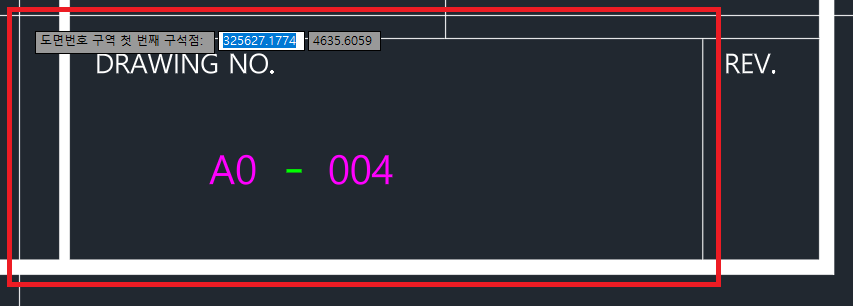
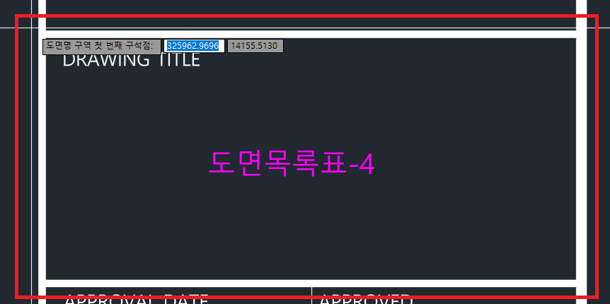
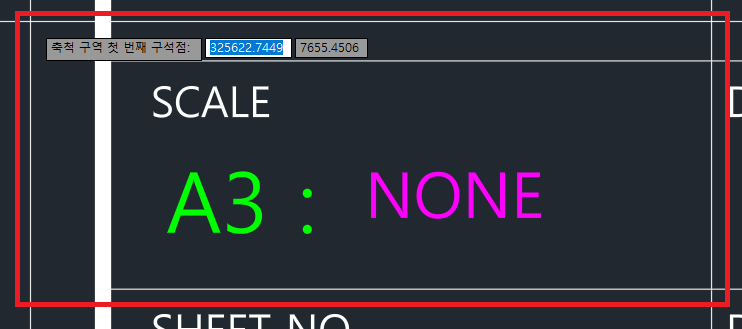

SET_ROI를 입력하고 엔터를 칩니다.

도면목록표 ↔ 개별 캐드 도면 자동 교차 검토 | 개발: 김정현
실시설계 도서 납품 전, '도면목록표'와 수백 장의 '개별 캐드 도면' 정보를 자동으로 교차 검토하는
업무 자동화(QA) 솔루션입니다.
사람의 눈으로 찾기 힘든 데이터 누락, 오타, 도면번호 불일치, 축척(A1/A3) 오류를
단 몇 분 만에 엑셀 리포트로 출력합니다.
| 추출 항목 | 내용 |
|---|---|
도면번호(LIST) | AA-000-000 형식의 도면번호 |
구분_LIST(동) | 동 및 구역 정보 (예: 102동, 102동 코어#1) |
도면명(LIST) | 도면 제목 |
축척_A1(LIST) | A1 용지 기준 축척 |
축척_A3(LIST) | A3 용지 기준 축척 |
프로그램이 DWG 파일을 내부적으로 읽기 위해 반드시 필요한 변환 엔진입니다.
C:\Program Files\ODA 기본값 그대로 유지하세요.
경로를 변경하면 프로그램이 엔진을 자동으로 찾지 못합니다.
다운로드: opendesign.com → ODA File Converter에서 Windows 버전 설치
배포 폴더의 SET_ROI.lsp 파일을 오토캐드 화면에 드래그 앤 드롭하여 로드합니다.
%APPDATA%\AutoDWG_Checker\에 자동 저장됩니다.
프로젝트 도곽이 바뀔 때마다 최초 1회만 실행하면 됩니다.
SET_ROI를 입력하고 엔터를 칩니다.





DWGChecker.exe를 더블클릭하여 실행한 뒤 아래 항목을 입력합니다.
X-FORM.dwg)을 선택하거나 창에 끌어다 놓으세요.
도곽 블록 이름이 자동으로 채워집니다.
분석 완료 후 엑셀 폴더가 자동으로 열립니다. 도면검토리포트_최종.xlsx를 열어 결과를 확인하세요.
도면목록표(LIST)와 개별 캐드 도면(DWG)을 도면번호 기준으로 대조하는 메인 시트입니다.
| 상태 값 | 의미 |
|---|---|
| 일치 | 양쪽 데이터가 완전히 일치 |
| DWG 누락 | 목록표에는 있으나 CAD 파일이 없음 |
| 목록표 누락 | CAD 파일은 있으나 목록표에 없음 |
| 도면번호 불일치 | 도면번호가 서로 다름 |
| 도면명 불일치 | 도면명이 서로 다름 |
| 축척 불일치 | A1 또는 A3 축척이 서로 다름 |
| 동 불일치 | 동·구역 정보가 서로 다름 |
| 도면명/축척 불일치 | 여러 항목이 동시에 다를 경우 /로 연결하여 표시 |
각 CAD 도면 내부의 뷰 기호(부분 상세도 참조 기호)를 추출하여 도면명·축척이 도곽 정보와 일치하는지 검토합니다.
| 상태 값 | 의미 |
|---|---|
| 일치 | 도면명·축척 모두 일치 |
| 도면명 불일치 | 뷰 도면명이 도곽 도면명과 맞지 않음 |
| 축척 불일치 | 뷰 축척이 도곽 축척과 맞지 않음 |
| 도면명/축척 불일치 | 도면명과 축척 모두 맞지 않음 |
| 중복 | 같은 파일 내 동일 뷰 도면명이 두 번 이상 등장 (오타 의심) |
view_symbol_roi가 SET_ROI에서 설정되어 있어야 합니다.
도면명 맨 앞에 102동, A동 등 동 식별자가 있으면 구분 열로 자동 분리합니다.
층 정보(지하N층, 지상N층) 이전의 구역 식별자를 동 정보에 합산합니다.
동·구역 정보가 생략된 들여쓰기 행은 위 참조 행의 동 정보를 자동으로 상속합니다.
도면검토리포트_최종.xlsx 파일이 열려있으면 덮어쓰기가 불가합니다. 엑셀 창을 닫고 다시 눌러주세요.SET_ROI로 설정했던 도곽 이름이 다르면 발생합니다. 이름의 띄어쓰기, 대소문자를 정확히 확인하세요.SET_ROI를 다시 실행하여 박스를 조금 더 넉넉하게(또는 타이트하게) 다시 지정해 보세요.SET_ROI 설정 시 view_symbol_roi 항목이 함께 저장되어 있어야 합니다. LISP 설정을 확인하고 ROI를 다시 설정해 주세요.A3=1/200, A3:200, A3-1/200 등 다양한 형식을 지원합니다. 단, A1 또는 A3 텍스트가 축척 값과 함께 명시되어 있어야 합니다.